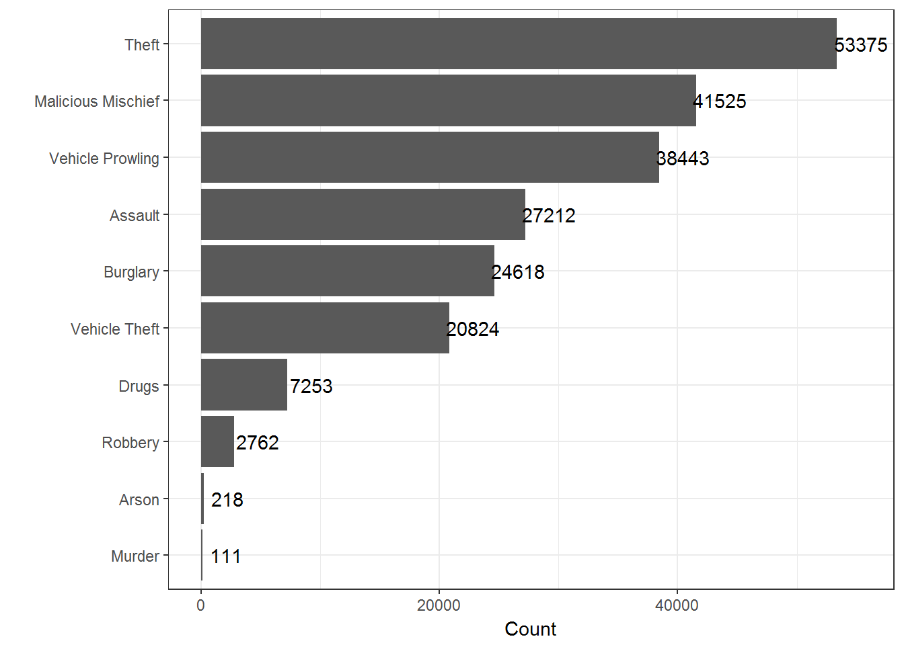
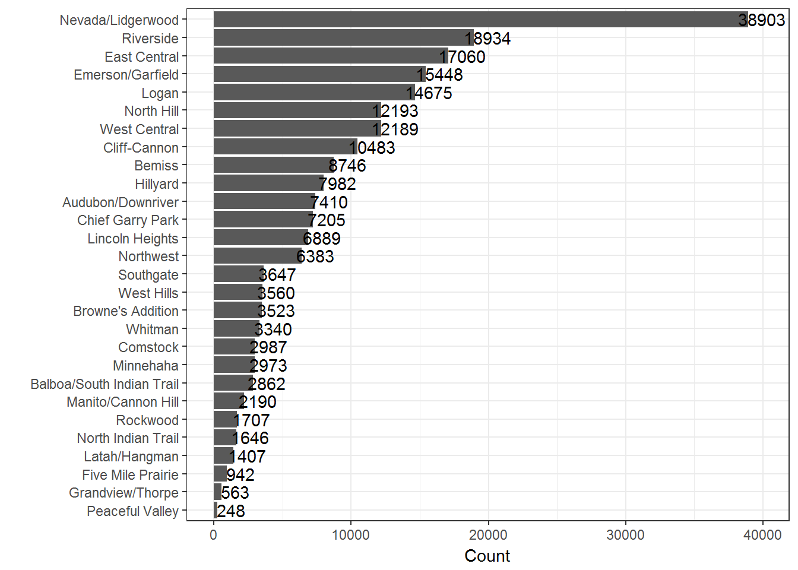
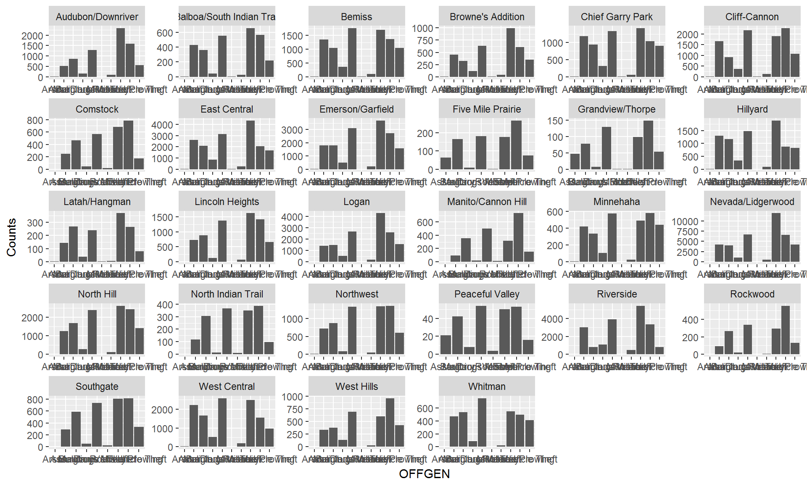

# Arrive at Crime_byNeighborhood using earlier code that was originated by Krisztian
# crimedfonly=data.frame(Crime_byNeighborhood)
# save(crimedfonly,file="Data/Crime_byNeighborhood.Rda")
load("Data/Crime_byNeighborhood.Rda")
str(crimedfonly)## 'data.frame': 216341 obs. of 11 variables:
## $ OFFENSE : Factor w/ 43 levels "ARSON","ASSAULT-SIMPLE",..: 27 23 23 8 37 37 23 37 37 27 ...
## $ OFFGEN : Factor w/ 10 levels "Arson","Assault",..: 8 5 5 2 9 9 5 9 9 8 ...
## $ BEGINDATE: Factor w/ 3341 levels "2000/01/01","2000/07/14",..: 999 1066 196 198 192 199 200 199 201 201 ...
## $ ENDDATE : Factor w/ 3259 levels "2000/12/01","2001/01/01",..: 914 982 112 113 107 115 115 115 116 116 ...
## $ LOCATION : Factor w/ 12021 levels "0 Block Of E 13Th Av",..: 10784 2688 10290 720 10696 353 5879 9549 965 11116 ...
## $ Name : Factor w/ 28 levels "Audubon/Downriver",..: NA NA 16 20 18 16 14 16 6 15 ...
## $ Lat : num NA NA 47.6 47.7 47.7 ...
## $ Lng : num NA NA -117 -117 -117 ...
## $ coords.x1: num 2477294 2480061 2481088 2464135 2485380 ...
## $ coords.x2: num 361936 299239 252062 291819 287599 ...
## $ optional : logi TRUE TRUE TRUE TRUE TRUE TRUE ...suppressPackageStartupMessages(library(ggplot2))
suppressPackageStartupMessages(library(dplyr))
suppressPackageStartupMessages(library(lubridate))crimedfonly %>% group_by(OFFGEN)%>%summarise(Counts=length(OFFGEN))%>% ggplot(.,aes(reorder(OFFGEN,Counts),Counts))+geom_bar(stat="identity")+geom_text(aes(x=OFFGEN,y=Counts+2000,label=Counts))+coord_flip()+theme_bw()+labs(y="Count",x="")
crimedfonly %>% group_by(Name)%>%summarise(Counts=length(Name))%>%filter(Name!="")%>% ggplot(.,aes(reorder(Name,Counts),Counts))+geom_bar(stat="identity")+geom_text(aes(x=Name,y=Counts+1000,label=Counts))+coord_flip()+theme_bw()+labs(y="Count",x="")
# A shiny app will do well here
crimedfonly %>% group_by(Name,OFFGEN)%>%summarise(Counts=length(OFFGEN))%>%filter(Name!="")%>% ggplot(.,aes(OFFGEN,Counts))+geom_bar(stat="identity")+facet_wrap(~Name,scales="free")
# Adds 9 columns to the dataset
crimedfonly=crimedfonly[,1:11]
# Beginning dates parsed
crimedfonly$beginyear=year(ymd(crimedfonly$BEGINDATE))
crimedfonly$beginmonth=month(ymd(crimedfonly$BEGINDATE),label=TRUE)# label parameter inserts name of month instead of number
crimedfonly$begindate=day(ymd(crimedfonly$BEGINDATE))
crimedfonly$beginday=wday(ymd(crimedfonly$BEGINDATE)) # label parameter inserts day of week instead of number of the day in a 7-day week
# Ending dates parsed
crimedfonly$endyear=year(ymd(crimedfonly$ENDDATE))
crimedfonly$endmonth=month(ymd(crimedfonly$ENDDATE),label=TRUE)
crimedfonly$enddate=day(ymd(crimedfonly$ENDDATE))
crimedfonly$endday=wday(ymd(crimedfonly$ENDDATE),label=TRUE)
# duration, in days, between starting and ending days
crimedfonly$durationdays= (as.duration(ymd(crimedfonly$ENDDATE)-ymd(crimedfonly$BEGINDATE)))/ddays(1)
head(crimedfonly)## OFFENSE OFFGEN BEGINDATE ENDDATE
## 1 THEFT Theft 2010/03/12 2010/03/12
## 2 MALICIOUS MISCHIEF Malicious Mischief 2010/05/18 2010/05/19
## 3 MALICIOUS MISCHIEF Malicious Mischief 2007/12/30 2007/12/31
## 4 ASSAULT 4TH/CITY Assault 2008/01/01 2008/01/01
## 5 VEH-PROWL Vehicle Prowling 2007/12/26 2007/12/26
## 6 VEH-PROWL Vehicle Prowling 2008/01/02 2008/01/03
## LOCATION Name Lat Lng
## 1 800 Block Of S Thor St <NA> NA NA
## 2 1800 Block Of W Gardner Av <NA> NA NA
## 3 700 Block Of W 17Th Av Manito/Cannon Hill 47.63393 -117.4179
## 4 10200 Block Of N Seminole Dr North Indian Trail 47.74563 -117.4911
## 5 800 Block Of E Magnesium Rd Nevada/Lidgerwood 47.71833 -117.3989
## 6 100 Block Of W 17Th Av Manito/Cannon Hill 47.63393 -117.4179
## coords.x1 coords.x2 optional beginyear beginmonth begindate beginday
## 1 2477294 361936 TRUE 2010 Mar 12 6
## 2 2480061 299239 TRUE 2010 May 18 3
## 3 2481088 252062 TRUE 2007 Dec 30 1
## 4 2464135 291819 TRUE 2008 Jan 1 3
## 5 2485380 287599 TRUE 2007 Dec 26 4
## 6 2483348 252177 TRUE 2008 Jan 2 4
## endyear endmonth enddate endday durationdays
## 1 2010 Mar 12 Fri 0
## 2 2010 May 19 Wed 1
## 3 2007 Dec 31 Mon 1
## 4 2008 Jan 1 Tues 0
## 5 2007 Dec 26 Wed 0
## 6 2008 Jan 3 Thurs 1